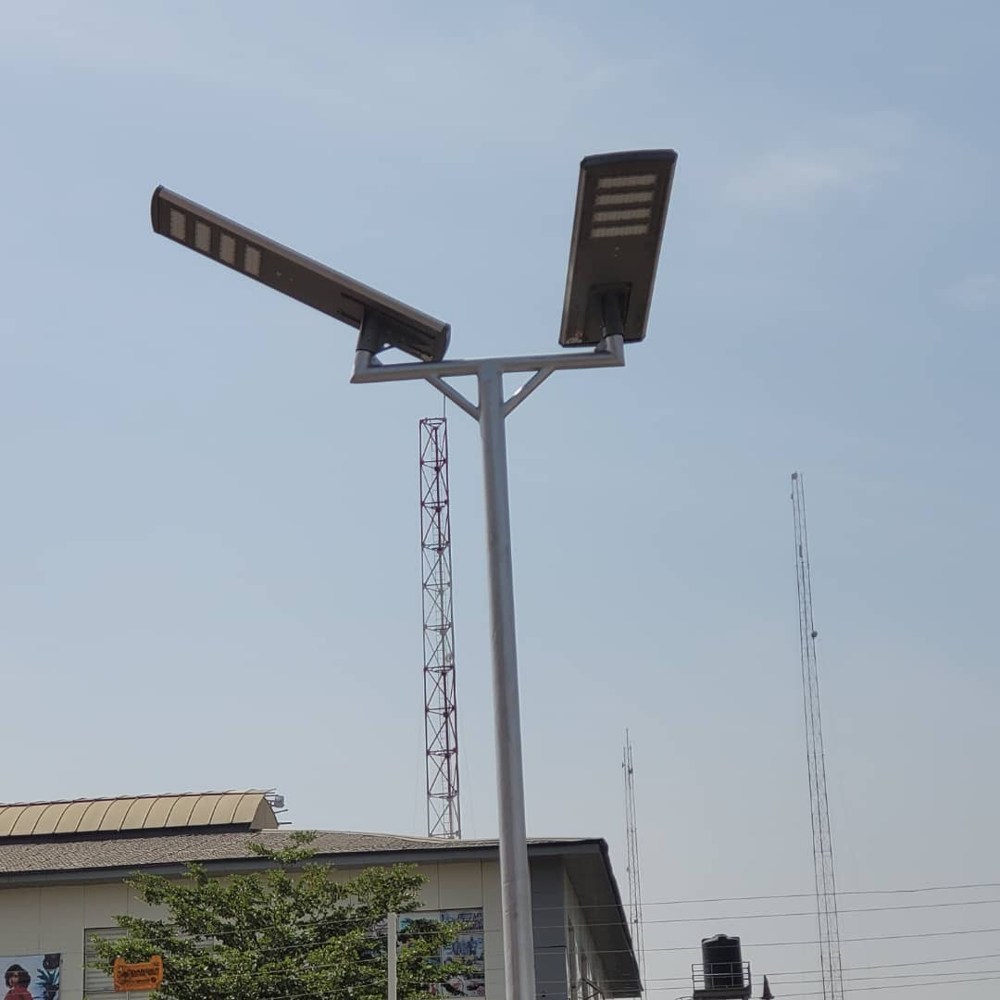

Survey and planning
We review the route or site, lighting priorities, potential obstructions, solar access and installation conditions.
Off-grid lighting solutions for roads, estates, campuses and public spaces.

Admoltech Services Ltd. designs, supplies and installs solar street-light systems for private and public environments in Abuja and across Nigeria. We begin with the road, site layout, required coverage and operating conditions before recommending a configuration.
A properly planned system considers solar exposure, pole positions, lighting objectives, battery autonomy, controls and the practical realities of installation and maintenance.
Every engagement is shaped by the intended use of the area and the client’s project requirements.
We review the route or site, lighting priorities, potential obstructions, solar access and installation conditions.
Suitable poles, luminaires, panels, batteries and controls are coordinated and installed to the agreed scope.
The completed system is checked, commissioned and handed over with practical operating and maintenance guidance.
Our solutions can be planned for access roads, residential estates, institutional campuses, commercial premises, car parks and other public spaces where dependable night-time visibility is required.
Tell us about the location, road or property. We will discuss the intended coverage and arrange the next practical step.
Request a Quote